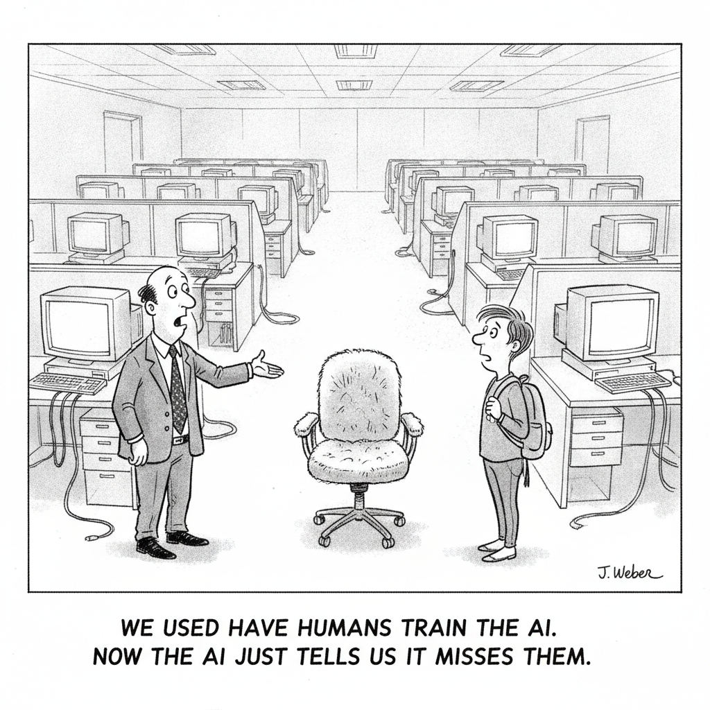

Nate B. Jones names a paradox every AI user is hitting at once: the tools keep getting better and cheaper, yet everyone's output is starting to look the same. When execution gets cheap, he argues, value doesn't vanish, it moves, and the whole industry is currently sprinting to answer the wrong question, how to route everything to the cheapest model, just as that answer becomes table stakes.
His evidence is Mitchell Hashimoto's experiment. A budget model, GPT-5.5, and a $9 Fable 5 run all produced equally acceptable code on ordinary tasks, making the frontier model look like a rip-off, until Hashimoto handed it a problem the cheap models couldn't touch: optimizing his own systems code. That two-hour, $40 job reached a level he says he couldn't have hit himself. Nobody assigned that task; it existed only because an expert imagined it. The ceiling on AI's value, Jones concludes, was never the model or the price. It's the size of your list of things worth asking for. Cheap execution is the engine; frontier-grade imagination is where you steer the plane.
A UN scientific panel warns that artificial intelligence is advancing faster than the regulatory frameworks meant to govern it, laying out both the transformative upside, from medical breakthroughs to scientific acceleration, and the mounting risks of disinformation and deepfakes. The message is a call to build guardrails now, while they can still catch up.
AI Labor · Cartoon

"We used to have humans train the AI. Now the AI just tells us it misses them."
Amazon will stop accepting new customers for Mechanical Turk on July 30, the beginning of the end for the 21-year-old crowdsourcing platform that paid workers small sums to label data and complete micro-tasks. Existing customers can keep using it for now, but the wind-down closes a chapter on the human-in-the-loop labor that quietly trained much of modern AI, right as the models it helped build make that work redundant.
Matt Maher pits GPT-5.5 against Opus 4.8 across real coding and agent tasks and concludes the headline matchup misses the point. The biggest productivity unlock, he argues, was /goal mode, a workflow that lets the model plan and drive toward an outcome instead of executing step-by-step instructions. A practical look at where the frontier models actually differ in day-to-day work.
Simon Willison used Claude Fable to run a comprehensive pre-release review of sqlite-utils 4.0, and it surfaced real bugs, including a transaction-handling flaw in delete_where() that could cause data loss. The AI-assisted effort spanned 37 prompts across multiple sessions at an estimated $149.25 in unsubsidized API costs, a concrete data point on what serious agentic code review actually costs.
✦ The Big Picture
Mitchell Hashimoto ran a budget model, GPT-5.5, and a $9 Fable 5 job against the same ordinary coding task, and all three produced acceptable work, until he handed the frontier model a problem the cheap ones couldn't touch and it delivered something he says he couldn't have built himself, for $40 and two hours. That single experiment is the hinge of today's issue: the price of intelligence is being rewritten from both ends at once. Cheap execution is racing toward free, the human micro-labor that trained AI is being retired, and the premium is migrating to the two things machines still can't supply on their own, judgment about what's worth doing and the patience to verify it was done right.
▶Listen to the Digest~6 min
Today's Headlines
The Repricing of Intelligence
You can't compete on cheap models anymore, because everyone is about to have them. Nate B. Jones's argument starts from a paradox users are feeling all at once: the tools get better and cheaper, yet everyone's output looks the same. His frame is that when execution gets cheap, value doesn't disappear, it moves. Routing everything to the cheapest model is real and worth doing, but it's becoming table stakes; the leverage sits on top of a cheap execution layer, in the "targeted, surgical" application of frontier models to the questions that decide what the cheap layer should even build. The ceiling on AI's value to you, he concludes, "was never the model or the price or the prompt pack." It's the length of your list of things worth asking for, and no process, backlog, or best-practices guide generates the Hashimoto task; only an expert's imagination does.
Amazon is retiring Mechanical Turk, and the timing is the story. The platform closes to new customers on July 30 and enters maintenance mode ("we do not plan to introduce new features"). MTurk launched in 2005, named after the 1770s chess-playing automaton that secretly hid a human operator, and around 2018 Amazon repositioned it as an AI data-labeling tool wired into SageMaker. The kicker is an irony that undercuts its whole premise: a 2023 analysis found 33 to 46 percent of MTurk workers were themselves using LLMs to complete their tasks. The human-in-the-loop layer that trained modern AI is being wound down at the exact moment the models it labeled can do the labeling, and had already started doing the workers' jobs for them.
Frontier Models Earn Their Keep on the Hard Part
Claude Fable found a data-loss bug in sqlite-utils, and it cost $149.25. Simon Willison used Claude Fable to review the sqlite-utils 4.0rc2 release and it surfaced a genuine flaw in delete_where(): the method ran its DELETE outside a transaction, leaving the connection in an open-transaction state so that every later atomic() call silently failed to commit, and subsequent inserts and table creations vanished on reopen. The full effort ran $141.02 for the main review plus five smaller passes, 37 prompts, 34 commits, roughly +1,321/-190 lines across 30 files. A cross-review with GPT-5.5 caught two more critical db.query() bugs. Willison, a self-described skeptic, wrote that he "used to think that the idea of having one model review the work of another was somewhat absurd, it felt weirdly superstitious," before conceding: "the problem is it really does work."
GPT-5.5 vs Opus 4.8, and the workflow beat the model. Matt Maher pitted Codex (GPT-5.5, extra-high) against Claude Code (Opus 4.8, extra-high) building a genuinely hard target, a native macOS radial launcher in Swift, and also ran each in /goal mode, an open-ended, outcome-driven build in its own worktree. His verdict: the goal-mode builds were "measurably, markedly better" for both models, obvious to any observer. Claude won "almost hands down," but GPT-5.5 was "really very excellent" and a pass or two of settings-panel refinement would have closed the gap. The builds took 30 to 60 minutes each. "Everything's very, very close these days," which is exactly why the mode you run mattered more than the badge on the model.
The Governance Gap
The UN's new science panel says the world needs to act now. The Independent International Scientific Panel on AI, 40 experts serving in a personal capacity, released its preliminary report on July 1 and found "the complexity of tasks these systems can complete has been doubling every few months." It documents a stark concentration of power, the US holds about 75 percent of global AI supercomputer capacity and China about 15 percent, nearly 90 percent between two countries, and warns that developing nations depend on tools they "cannot build, inspect, audit or adapt." The benefits are real (200M+ protein structures predicted, earlier disease detection, food-security early warning); so are the named risks (deepfakes and abuse material, disinformation, AI-enabled cyberattacks, mental-health harms, loss of control). More than 40 governance frameworks now exist worldwide, and the panel found them fragmented and largely untested. The UN Global Dialogue on AI Governance opens today, July 6, in Geneva.
The Throughline
Read together, today's stories describe a single price chart with two lines crossing. The cost of routine execution is collapsing toward zero, and the value of expert judgment is rising to meet the gap. Jones names it directly, Hashimoto's cheap models all cleared the ordinary bar, so the differentiator was the one task nobody assigned. Maher's bake-off is the same finding in miniature: with GPT-5.5 and Opus 4.8 so close that a couple of refinement passes separate them, the meaningful variable wasn't the model at all but /goal mode, the workflow that let a human specify an outcome and let the machine own the path. When the models converge, the leverage moves up a level, to how you ask.
Willison's $149 invoice is where this stops being a slogan and becomes an accounting line. He didn't pay frontier prices to write code faster; he paid them to catch a silent data-loss bug that would have shipped, the kind of failure a cheap model glosses and a human reviewer misses at 11pm. That reframes the "just route to cheap models" consensus that Jones warns is already conventional wisdom. The cheap layer executes; the expensive layer verifies and imagines. The skeptic's conversion ("it really does work") is really a conversion about where to spend: not on producing more output, which is nearly free, but on trusting it, which is not.
MTurk is the same repricing seen from the bottom of the ladder. The economy's cheapest human intelligence, penny-per-task labeling, is being decommissioned precisely because it has been commoditized past the point of viability, and the workers had already outsourced themselves to the LLMs. What's vanishing isn't "human work," it's undifferentiated human work, the exact category Jones says has no defensible value left. What survives, in his telling and Willison's, is the part that requires taste, context, and accountability. The UN report is the uncomfortable coda: the capability to imagine and verify is concentrating in the same two countries that hold 90 percent of the compute, while everyone else inherits tools they can't audit.
The Bigger Picture
Step back and 2026 looks like the year intelligence got unbundled and separately priced. For most of computing history, "doing the task" and "knowing whether the task was worth doing" came bundled in the same human. AI is prying those apart and stamping a different price on each: execution trending to free, verification and imagination commanding a premium steep enough that a careful engineer will happily pay $149 for one code review. The strategic implication for anyone building with these tools is counterintuitive but consistent across today's issue, spend the savings from cheap execution on more expensive judgment, not on more output. The organizations that win the next phase won't be the ones generating the most code or content; they'll be the ones with the longest list of problems worth solving and the discipline to verify the answers.
That is also why the UN's warning lands harder than the usual governance hand-wringing. If value is migrating to imagination, verification, and the compute that powers both, then a world where two countries hold 90 percent of the supercomputers and most nations use models they "cannot inspect or audit" isn't just unequal on access, it's unequal on the exact capabilities that now carry the value. The end of MTurk is a preview of the friction: a whole tier of work disappears faster than the systems meant to govern the transition can convene. The Geneva dialogue opens today into a world where the tasks these systems can do double every few months. The gap between what AI can do and what our institutions can absorb is the real story under all five headlines, and nothing today suggests it's closing.
What to Watch
Whether "route to cheap models" curdles into a trap. Jones's contrarian read is that the whole industry is converging on the cheap-execution playbook just as it becomes undifferentiated. Watch for the counter-move: teams that visibly reinvest their token savings into frontier-grade review and planning (Willison-style) versus teams that simply pocket the savings and ship more unverified output. The first group's defect rates will tell the story within a quarter.
Whether workflow features become the real benchmark. Maher's finding that /goal mode mattered more than GPT-5.5-vs-Opus suggests raw model leaderboards are losing signal. Watch whether the next wave of comparisons shifts from "which model" to "which harness," and whether his open benchmark starts scoring modes and agent scaffolds rather than base models.
The Geneva dialogue's first concrete output. The UN Global Dialogue on AI Governance opens today with 40+ fragmented frameworks already on the table. The test isn't another report; it's whether anything emerges that a developing nation without its own compute could actually use to inspect or contest a model it didn't build.